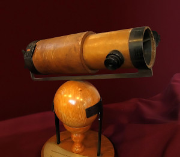

Reflecting TelescopeDiscovery of the Law of Gravitation
Isaac Newton Inventions
Newton's first major public scientific achievement was designing and constructing a reflecting telescope in 1668. As a professor at Cambridge, Newton was required to deliver an annual course of lectures and chose optics as his initial topic. He used his telescope to study optics and help prove his theory of light and color.
The Royal Society asked for a demonstration of his reflecting telescope in 1671, and the organization's interest encouraged Newton to publish his notes on light, optics and color in 1672. These notes were later published as part of Newton's Opticks: Or, A treatise of the Reflections, Refractions, Inflections and Colours of Light.
Newton’s three laws of motion set the foundation for modern classical mechanics.
His discovery of the gravitational force gave man the ability to predict movements of celestial objects, while simultaneously validating Kepler’s laws and the heliocentric Copernican model of the solar system.